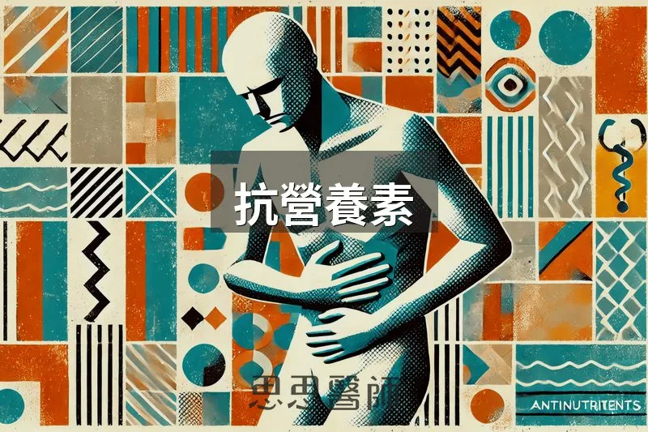
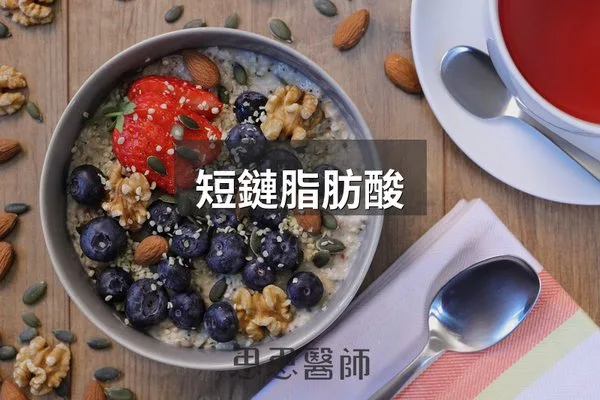

抗營養素

當我在慈濟醫院看診時，最常聽到的一句話就是：「我都已經吃素了，為什麼還會得這個病？」這句話反映出患者對兩件事的誤解。首先，吃素不一定等於健康；其次，每種飲食都有其優缺點。
素食的一個大問題是，植物中含有許多「抗營養素」(Antinutrients)，這些成分本來是植物演化出來對抗昆蟲和動物啃食的防禦機制，會阻礙其他營養的吸收，甚至在過量時可能影響腸道健康。不過，如果能了解並避開這些抗營養素，素食也是可以很健康的。接下來，我們來探討幾種常見的抗營養素，以及背後真正有研究支持的機轉。
1. 凝集素 (Lectin)
凝集素是一種常被提到的抗營養素，它是一種會與碳水化合物結合的蛋白質，能夠保護植物免受昆蟲和動物的侵害。一篇 2013 年發表在《Nutrients》的回顧整合了細胞、動物與人體研究，指出小麥胚芽凝集素（wheat germ agglutinin）與麩質會增加腸道通透性、誘發促發炎反應，被認為與慢性發炎和部分自體免疫疾病的發生有關。
凝集素具有「凝集」血球的特性，這也是坊間流傳「血型飲食法」（不同血型要避開不同凝集素食物）的由來。但這個理論真的經得起檢驗嗎？2014 年一篇發表在《PLoS One》、針對 1455 人、直接用 ABO 基因型（而非自述血型）配對飲食分數的研究發現：某些飲食型態確實能改善心血管代謝指標，但這個效果跟受試者真實的血型完全無關，結論明確指出研究結果不支持血型飲食法的假說。換句話說，吃某種飲食對健康有幫助，但原因不是因為你是哪個血型。
儘管大多數人能夠承受一定量的凝集素，過多的凝集素仍可能引起腹瀉、便秘、關節肌肉疼痛、疲勞等腸胃不適。高凝集素食物包括腰豆、茄子、大豆、杏仁、花生、腰果、麥類等。浸泡或高溫高壓烹調可以有效去除豆類中的大部分凝集素，但麥類的凝集素較不易被破壞，建議盡量少吃。對於有自體免疫疾病或甲狀腺疾病的人，避開凝集素可能會有意想不到的改善效果。
2. 皂素 (Saponin)
皂素是一種比較少被提及的抗營養素，結構由「類固醇」和「三萜」組成，因其能形成肥皂泡沫結構而得名，是植物用來保護種子不被掠食者啃食的防禦成分。皂素的作用機轉已經被研究得相當清楚：它會與細胞膜上的膽固醇分子結合，在細胞膜上形成孔洞，導致細胞受損，2002 年《British Journal of Nutrition》的經典回顧以及 2015 年一篇針對皂素甾體化合物 digitonin 的研究都證實了這個「必須先跟膽固醇結合才能破壞細胞膜」的機轉。
皂素主要存在於豆類、偽穀物（如蕎麥、奇亞籽、藜麥）、茄科（如青椒、辣椒、番茄、馬鈴薯），以及洋蔥、大蒜、甜菜、茶中。雖然皂素具有降膽固醇的潛力，但它同時也會破壞腸壁細胞，因此不建議透過大量食用富含皂素的食物來降膽固醇，過量攝取仍可能引起腹痛、腹脹、腹瀉，長期食用則可能加重腸漏、發炎等問題。
好消息是，發酵能有效降低皂素含量。2023 年一篇針對藜麥的發酵研究發現，用酵母菌與乳酸菌發酵後，皂素含量平均降低了 67%，同時植酸也降低了 64.6%。我會建議，如果你本身腸胃比較敏感、或有自體免疫病史，大豆和花生這兩種臨床上較常被觀察到會誘發免疫反應的食物，可以優先考慮減量或選擇發酵過的版本（如味噌、天貝）。
3. 植酸 (Phytate)
植酸是另一種常被提到的抗營養素，通常存在於種子或穀物中。植酸會與鋅、鐵等營養素結合，阻礙其吸收。1989 年一篇發表在《American Journal of Clinical Nutrition》的經典劑量實驗測量得很精確：隨餐攝取 2mg、25mg、250mg 的植酸，分別會讓鐵吸收率下降 18%、64%、82%，劑量越高、抑制效果越明顯。
但同一篇研究也證實了一個好消息：隨餐攝取維生素C可以顯著抵銷植酸對鐵吸收的抑制效果。此外，植酸的作用時間不長，一餐中的植酸不太會影響下一餐的營養吸收，浸泡、發芽和發酵都是進一步降低植酸的方法，腸道中的良好菌叢也有助於分解植酸。
4. 糖苷生物鹼 (Glycoalkaloids)
糖苷生物鹼是茄科植物用來自我防禦的抗營養素，常見的有馬鈴薯和未成熟番茄裡的茄鹼（solanine）和卡茄鹼（chaconine）。2002 年一篇發表在《Inflammatory Bowel Diseases》的研究用腸道細胞模型證實，這些糖苷生物鹼會嵌入並滲透腸道上皮細胞膜，以濃度依賴的方式破壞腸道屏障完整性，在動物實驗中甚至會加重發炎性腸道疾病的病變程度。2024 年一篇更新的研究進一步比較了不同種類糖苷生物鹼對腸道細胞屏障的破壞能力，確認這是一類具有共通機轉的腸道刺激物。
這類物質特別富含於馬鈴薯皮和生番茄中，自體免疫疾病患者應該避免多吃，建議食用馬鈴薯時先煮熟去皮再食用，番茄則盡量選擇成熟後再吃。
5. 醇溶蛋白 (Prolamins)
醇溶蛋白是一類存在於穀物中的儲氮蛋白質，常見的包括小麥中的 gliadin、大麥中的 hordein、黑麥中的 secalin、燕麥中的 avenin 和玉米中的 zein。燕麥和米的核心部分含有較低水平的醇溶蛋白，因此攝取白米的醇溶蛋白含量相對較低。
醇溶蛋白對乳糜瀉（Celiac disease）患者的腸道傷害機轉，已經被研究得非常透徹。義大利學者 Fasano 團隊在 2006 年發表的經典研究證實，gliadin 會活化腸道細胞釋放 zonulin，這個訊號會破壞腸道上皮細胞之間緊密連接的 occludin 與 ZO-1 蛋白，進而增加腸道通透性，而且乳糜瀉患者的這個反應比一般人更強烈、持續更久。研究也發現，即使是沒有乳糜瀉的健康人群，gliadin 同樣會引發程度較輕的腸道通透性變化，雖然多數人不會因此產生明顯症狀。
我們無法確切知道是哪種物質可能對你的身體造成傷害，但如果你患有嚴重的自體免疫疾病，我建議可以嘗試完全將穀物、豆類和茄科食物從飲食中移除 2 至 6 個月，觀察你的身體是否有所改善。這些抗營養素的存在，不代表植物性飲食不健康,而是提醒我們:怎麼挑、怎麼處理（浸泡、發酵、去皮、高溫烹調）食物,跟吃了什麼一樣重要。請注意，這些建議僅供參考，並非醫療建議。如果你有任何醫療問題，請務必諮詢你的醫師。
參考資料
2. ABO genotype, ‘blood-type’ diet and cardiometabolic risk factors（PLoS One, 2014）PMID 24454746
（本文由我規劃架構與觀點，並協同 AI 校正與潤飾語句）
 空腹小雞跟思思醫師一起斷食，順便養一隻小雞來養小雞 →
空腹小雞跟思思醫師一起斷食，順便養一隻小雞來養小雞 →
好朋友週信
一週一封：《健康駭客週報》這集的研究重點，加上家醫專欄這週的新文章。免費，隨時可以退訂。
延伸閱讀

腸道菌的比例是健康的關鍵
F:B 比值是 Firmicutes 與 Bacteroidetes 的比例，過高或過低各代表不同的腸道狀態，可從原型食物、多樣纖維、睡眠與壓力調整。

保養腸胃道的小訣竅
保養腸胃道應在清晨補充電解質、用蒸煮代替炒炸、進食時專注進食、每日至少12小時不進食、練習腹式呼吸並避免非必要服用抗生素。

短鏈脂肪酸
短鏈脂肪酸由腸內菌發酵纖維製造，能改善胰島素阻抗、腸漏症與大腦健康，應通過飲食纖維增加而非口服補充。